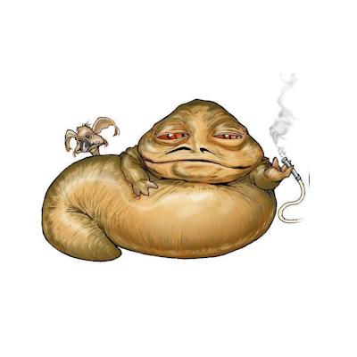

LUKE SKYWALKER
Espèce: HumainPlanète d'origine: Tatooine
Luke Skywalker est un héros de la Rébellion et un Jedi. Il a détruit l'Étoile de la Mort et a aidé à vaincre l'Empire Galactique.

PRINCESSE LEIA
Espèce: HumainPlanète d'origine: Alderaan
La Princesse Leia est une leader de la Rébellion et une figure clé dans la lutte contre l'Empire. Elle est également la sœur jumelle de Luke Skywalker.

HAN SOLO
Espèce: HumainPlanète d'origine: Corellia
Han Solo est un contrebandier et un pilote talentueux. Il est le capitaine du Faucon Millenium et un héros de la Rébellion.

DARK VADOR
Espèce: HumainPlanète d'origine: Tatooine
Dark Vador est un Seigneur Sith et un commandant de l'Empire Galactique. Il est également le père de Luke Skywalker et de la Princesse Leia.

YODA
Espèce: InconnuePlanète d'origine: Dagobah
Yoda est un Maître Jedi légendaire. Il a formé de nombreux Jedi, dont Luke Skywalker, et est connu pour sa sagesse et sa maîtrise de la Force.

OBI-WAN KENOBI
Espèce: HumainPlanète d'origine: Stewjon
Obi-Wan Kenobi est un Maître Jedi et un mentor pour Luke Skywalker. Il a joué un rôle clé dans la chute de l'Empire et la formation de Luke.

CHEWBACCA
Espèce: WookieePlanète d'origine: Kashyyyk
Chewbacca est un Wookiee et le copilote du Faucon Millenium. Il est un fidèle ami de Han Solo et un héros de la Rébellion.

R2-D2
Espèce: DroïdePlanète d'origine: Naboo
R2-D2 est un droïde astromécano et un héros de la Rébellion. Il a joué un rôle clé dans de nombreuses missions et est un ami fidèle de Luke Skywalker.

C-3PO
Espèce: DroïdePlanète d'origine: Tatooine
C-3PO est un droïde protocolaire et un héros de la Rébellion. Il est connu pour sa maîtrise de nombreuses langues et son amitié avec R2-D2.

BOBA FETT
Espèce: HumainPlanète d'origine: Kamino
Boba Fett est un chasseur de primes et un clone de Jango Fett. Il est connu pour son armure distinctive et son rôle dans la capture de Han Solo.

EMPEREUR PALPATINE
Espèce: HumainPlanète d'origine: Naboo
L'Empereur Palpatine est le dirigeant de l'Empire Galactique et un Seigneur Sith. Il est connu pour sa manipulation et son rôle dans la chute de la République.

Planète d'origine: Tatooine
JABBA LE HUTT
Espèce: HuttPlanète d'origine: Tatooine
Jabba le Hutt est un seigneur du crime et un puissant chef de la pègre. Il est connu pour son rôle dans la capture de Han Solo et son opposition à la Rébellion.

STORMTROOPER
Espèce: HumainPlanète d'origine: Diverses
Les stormtroopers sont les soldats d'élite de l'Empire Galactique. Ils sont connus pour leur armure blanche distinctive et leur loyauté envers l'Empire.

PILOTE DE X-WING
Espèce: HumainPlanète d'origine: Diverses
Les pilotes de X-Wing sont des héros de la Rébellion. Ils sont connus pour leurs compétences de pilotage et leur rôle dans la destruction de l'Étoile de la Mort.

GREEDO
Espèce: RodienPlanète d'origine: Rodia
Greedo est un chasseur de primes et un criminel. Il est connu pour sa confrontation avec Han Solo dans la cantina de Mos Eisley.

AMIRAL ACKBAR
Espèce: Mon CalamariPlanète d'origine: Mon Cala
L'amiral Ackbar est un stratège militaire et un héros de la Rébellion. Il est connu pour son rôle dans la bataille de Endor et sa célèbre phrase "C'est un piège !".